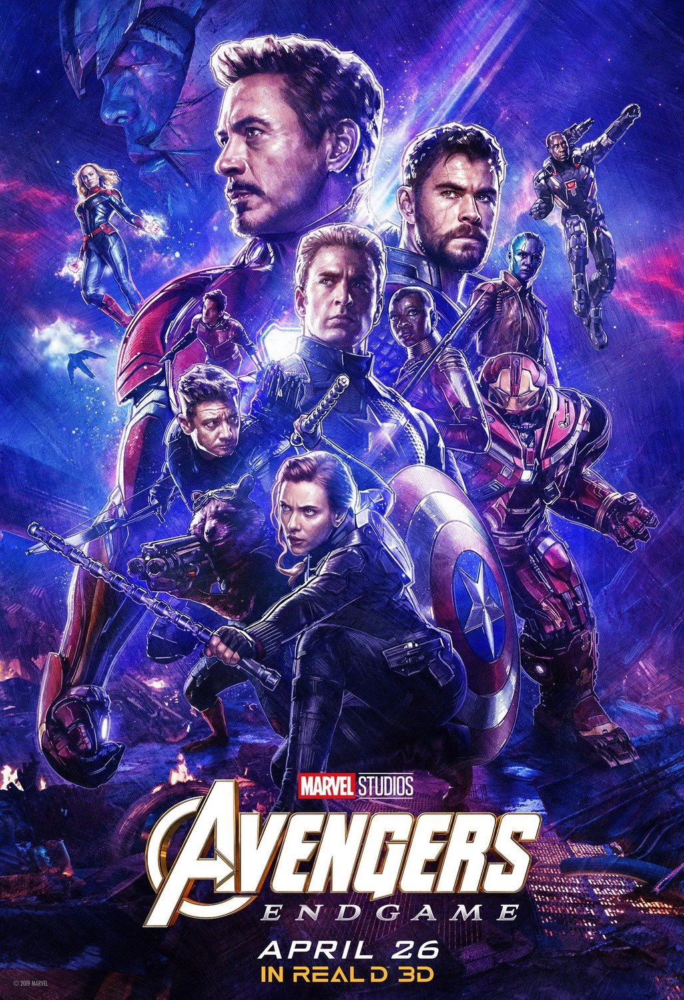

|  |
Movie Name: |
Avengers: End Game (2019) |
|
Twenty-three days after Thanos used the Infinity Gauntlet to disintegrate half of all life in the universe,[N 1] Carol Danvers rescues Tony Stark and Nebula from deep space and returns them to Earth, where they reunite with the remaining Avengers—Bruce Banner, Steve Rogers, Thor, Natasha Romanoff, and James Rhodes—and Rocket. Locating Thanos on an otherwise uninhabited planet, they plan to retake and use the Infinity Stones to reverse "the Snap", but Thanos reveals he destroyed the Stones to prevent their further use. Enraged, Thor decapitates Thanos. Five years later, Scott Lang escapes from the quantum realm.[N 2] At the Avengers compound, he explains to Romanoff and Rogers that he experienced only five hours while trapped. Theorizing the quantum realm could allow time travel, the three ask Stark to help them retrieve the Stones from the past to reverse Thanos' actions in the present. Stark refuses, thinking of his wife, Pepper Potts, and daughter, Morgan, but relents after looking at a picture of himself and Peter Parker. Stark and Banner, who has since merged his intelligence with the Hulk's strength, build a time machine. Banner notes changing the past does not affect their present; any changes instead create branched alternate realities. He and Rocket visit the Asgardian refugees' new home in Norway—New Asgard—to recruit Thor, now overweight and drinking heavily, despondent over his failure to stop Thanos. In Tokyo, Romanoff recruits Clint Barton, now a vigilante subsequent to the disintegration of his family. Banner, Lang, Rogers, and Stark travel to New York City in 2012.[N 3] Banner visits the Sanctum Sanctorum and convinces the Ancient One to give him the Time Stone. At Stark Tower, Rogers retrieves the Mind Stone, but Stark and Lang's attempt to steal the Space Stone fails, allowing 2012 Loki to escape with it. Rogers and Stark travel to S.H.I.E.L.D. headquarters in 1970, where Stark obtains an earlier version of the Space Stone and encounters his father, Howard, while Rogers steals Pym Particles from Hank Pym to return to the present. Meanwhile, Rocket and Thor travel to Asgard in 2013, extracting the Reality Stone from Jane Foster[N 4] and retrieving Thor's hammer, Mjolnir. Nebula and Rhodes travel to Morag in 2014 and steal the Power Stone before Peter Quill can.[N 5] Rhodes returns to the present with the Power Stone, but Nebula becomes incapacitated when her cybernetic implants link with those of her past self. Through this connection, 2014 Thanos learns of his future success and the Avengers' attempts to undo it. He captures Nebula and sends 2014 Nebula to the present in the former's place. Barton and Romanoff travel to Vormir in 2014, where the Soul Stone's keeper, the Red Skull, reveals it can only be acquired by sacrificing someone they love. Romanoff sacrifices herself, allowing Barton to obtain the Soul Stone. Reuniting in the present, the Avengers place the Stones into a Stark-created gauntlet, which Banner, the most resistant to the Stones' gamma radiation, uses to reverse the disintegrations. Meanwhile, 2014 Nebula uses the time machine to transport 2014 Thanos and his warship to the present, where he attacks the Avengers' compound, planning to destroy and rebuild the universe with the Stones. Nebula convinces 2014 Gamora to betray Thanos but fails to convince 2014 Nebula and is forced to kill her. Confronted by Stark, Thor, and a Mjolnir-wielding Rogers, Thanos outmatches them and summons his army from his warship to devastate Earth. Stephen Strange, restored to life, arrives and brings other sorcerers, the restored Avengers and Guardians of the Galaxy, the Ravagers, and the armies of Wakanda and Asgard to fight Thanos and his army, alongside Danvers, who destroys Thanos' warship as she arrives. After overpowering the heroes, Thanos seizes the gauntlet, but Stark steals the Stones back and uses them to disintegrate Thanos and his army, at the cost of his life. Following Stark's funeral, Thor appoints Valkyrie as the new ruler of New Asgard and joins the Guardians of the Galaxy. Rogers returns the Infinity Stones and Mjolnir to their original timelines and remains in the past to live with Peggy Carter. In the present, an elderly Rogers passes his shield and mantle on to Sam Wilson. |
||